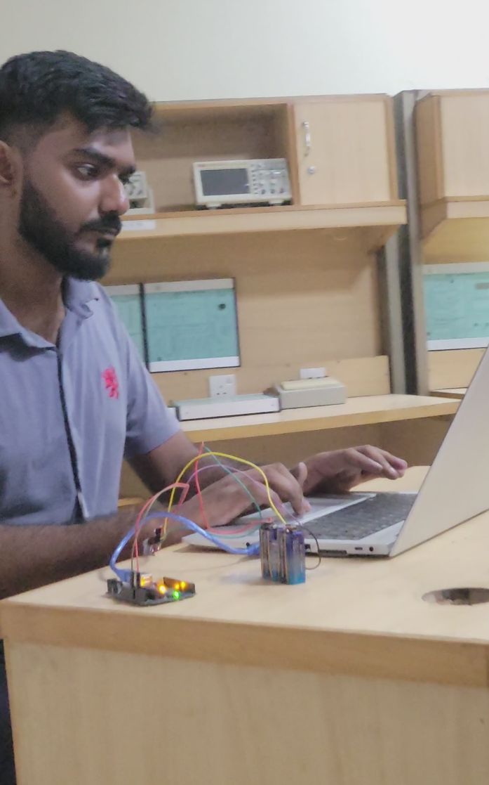
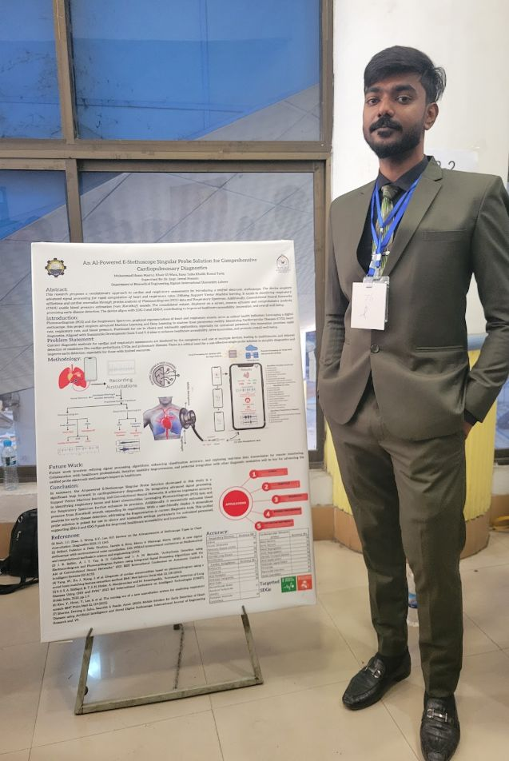
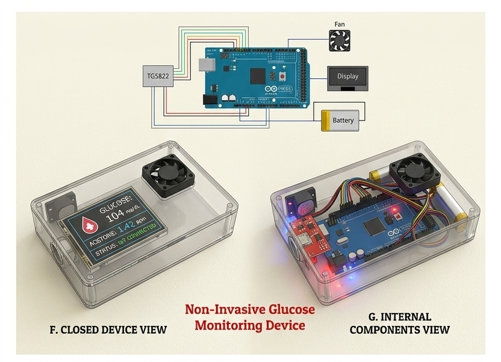
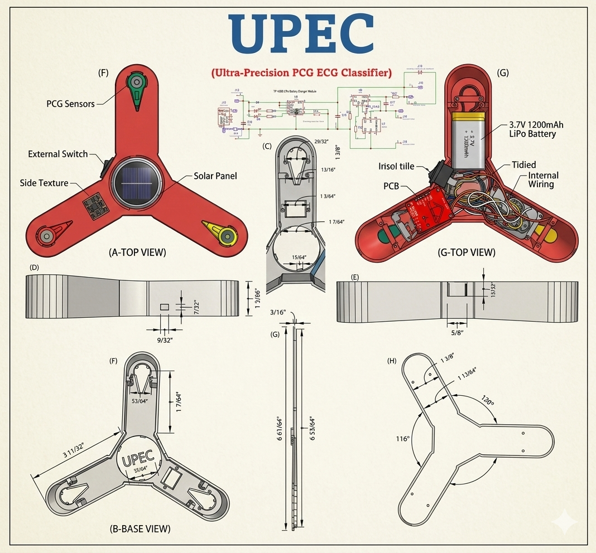

Welcome to my digital lab
Khair Ul Wara
Biomedical Engineer | AI in Healthcare | Wearable Sensors & Edge AI Innovator
Passionate about bridging the gap between cutting-edge Artificial Intelligence and clinical applications to revolutionize patient care through smart, non-invasive wearable sensors.
About Me
Professional Summary
A highly motivated Biomedical Engineer with expertise in developing innovative healthcare solutions. My focus lies at the intersection of Wearable Sensors, Edge AI, and Biomedical Signal Processing, creating tools that enhance diagnostic precision and clinical efficiency.
Research Statement
"Committed to advancing medical technology through the integration of artificial intelligence into wearable and embedded systems, striving to deliver accessible, real-time diagnostic tools for critical and chronic healthcare challenges."
Education
B.Sc. Biomedical Engineering 2021 – 2025
Riphah International University
CGPA
3.89/4.00
Core Competencies
Bridging hardware, software, and human biology.
Wearable Sensors
Biomedical Signal Processing
AI in Healthcare
Embedded / Edge AI
Biomedical Imaging
Professional Experience
Featured Projects
Selected works demonstrating innovation in healthcare technology.
Portable IoT-based Patient Monitoring System
Real-time vital signs tracking transmitted seamlessly via IoT protocols for continuous care.
Non-Invasive Glucose Monitoring Device
Revolutionary optical/NIR approach for painless continuous diabetic status monitoring.
Quad-Flex Robotic Manipulator
Advanced robotic arm tailored for precise biomedical and surgical assistance maneuvers.
UPEC – Multi-Modal AI Cardiac Diagnostic Device
Integrating multiple cardiac signal streams utilizing AI to detect complex arrhythmias.
EEG-Driven Gamified Stroke Rehabilitation
Utilizing a Hybrid CNN-Transformer to analyze EEG signals for targeted motor recovery gamification.
Ultrasound Gel Patches – Advanced Alternatives
Developing novel material solutions to replace conventional messy gels while retaining acoustic fidelity.
Research Publications
Reshaping the Healthcare World by AI-Integrated Wearable Sensors Following COVID-19
Bangul Khan, Rana Talha Khalid, Khair Ul Wara, Muhammad Hasan Masrur, Samiullah Khan, Wasim Ullah Khan, Umay Amara, Saad Abdullah.
Chemical Engineering Journal, Vol. 505, 2025 • DOI: 10.1016/j.cej.2025.159478
The Impact of BMI on Heart Rate and Blood Pressure: Unveiling the Cardiovascular Connection
Muhammad Daniyal Maqsood Alvi, Khair Ul Wara, Faizan Raza Shah Zaidi, Komal Tariq, Shahzad Nasim, Saifullah Bullo, Sidra Abid Syed.
Pakistan Journal of Biotechnology, 21(2), 540–549, 2024 • DOI: 10.34016/pjbt.2024.21.02.965
Advancements in Ultrasound Gel Pad Technologies: Enhancing Diagnostic Precision, Procedural Efficiency, and Therapeutic Applications
Khair Ul Wara, Muhammad Hasan Masrur, Talha Khalid, Komal Tariq, Abdul Alber, Hadiya Malik, Tahreem Tanweer.
(Peer Review)
A Semi-Automated Framework for Standardized Vertebral Measurement with Enhanced Reproducibility in Lumbar Spine MRI Analysis
Muhammad Hasan Masrur, Rana Talha Khalid, Khair Ul Wara, Abdul Alber, Faizan Ahmad, Zainab Bibi, Jawad Hussain.
Materials Proceedings, 23(1), 5 • DOI: 10.3390/materproc2025023005
Evaluating Machine Learning Classifiers for Automated Glaucoma Detection Using Fundus Images
Muhammad Daniyal Maqsood Alvi, Dua Ubaid, Khair Ul Wara, Faizan Raza Shah Zaidi, Sheikh Muzammil Anwar...
Biomedical Materials & Devices (2025) • DOI: 10.1007/s44174-025-00569-x
IoT-enabled Non-invasive Glucose Monitoring and Heart Rate Detection: A Smart Solution for Diabetes Management
Muhammad Daniyal Maqsood Alvi, Syed Muhammad Faizan Raza Shah Zaidi, Khair Ul Wara, Komal Tariq, Muhammad Arsalan, Jawad Hussain.
ICR Journal
Excellence Award
Best Student 2021-2025
IELTS Academic
English Proficiency Certificate
Visual Gallery
Moments from the lab, conferences, and prototype builds.

Working in the BioEra Lab

Presenting Research Poster

Glucose Monitor Prototype

Robotic Arm Setup
Initiate Connection
Interested in collaborating on AI in healthcare or wearable sensors? Reach out to me.